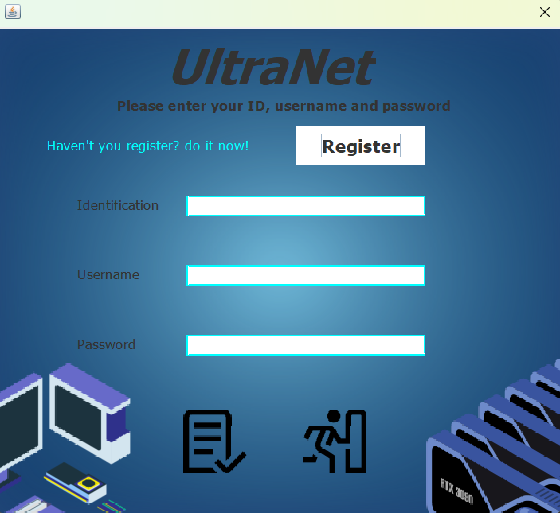
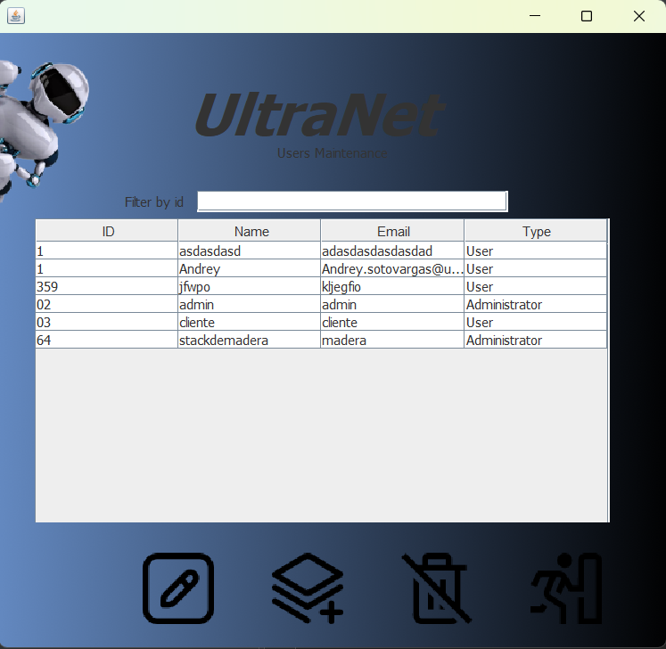
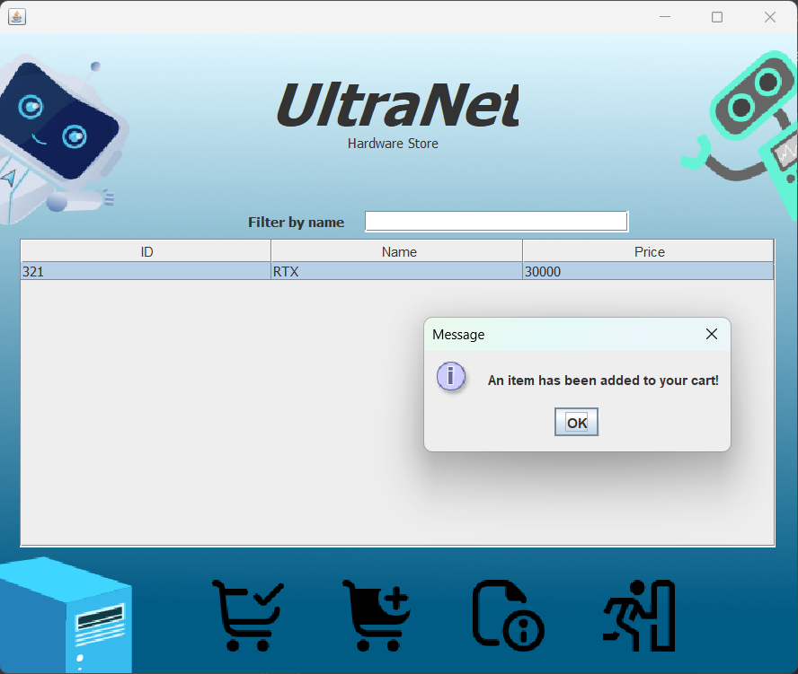
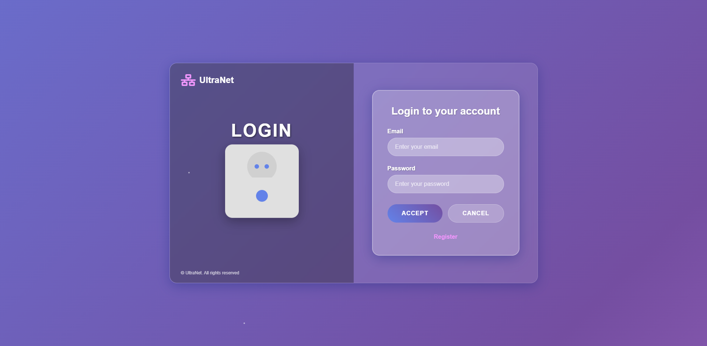
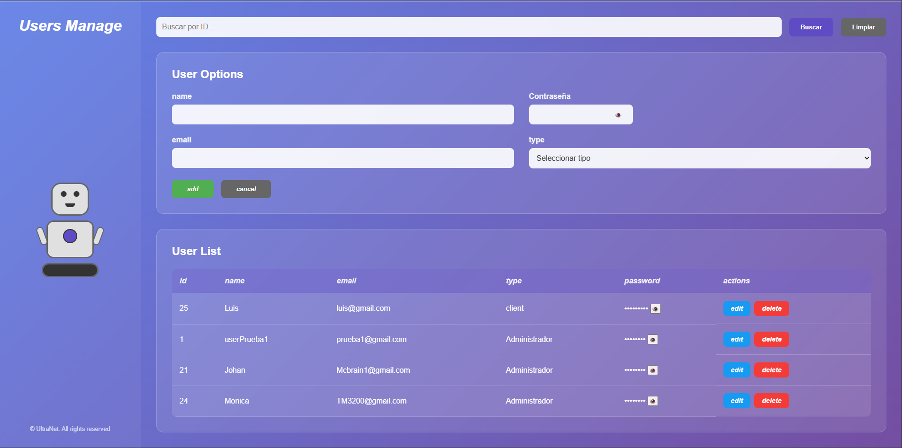
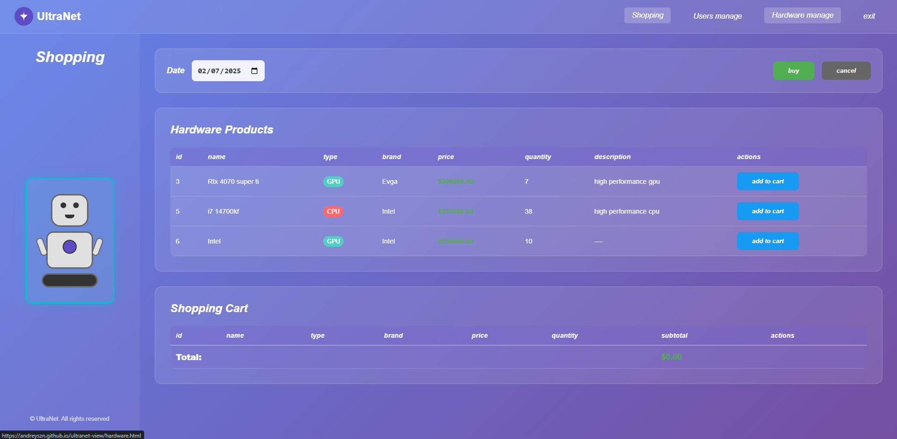
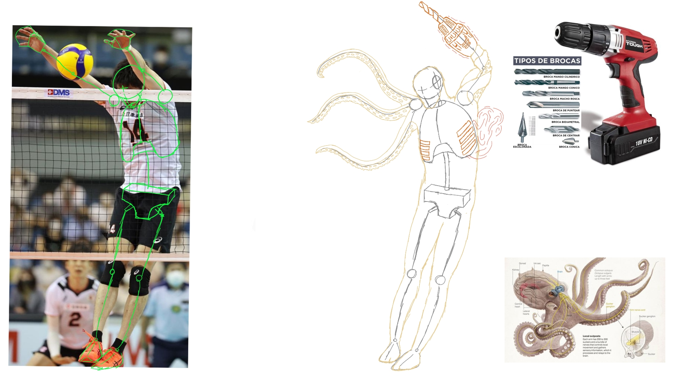
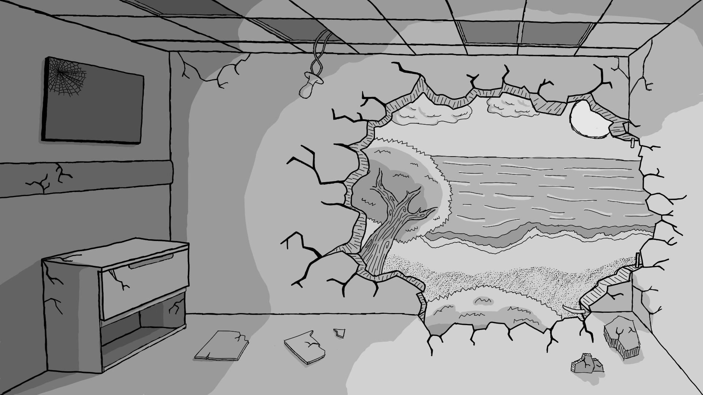
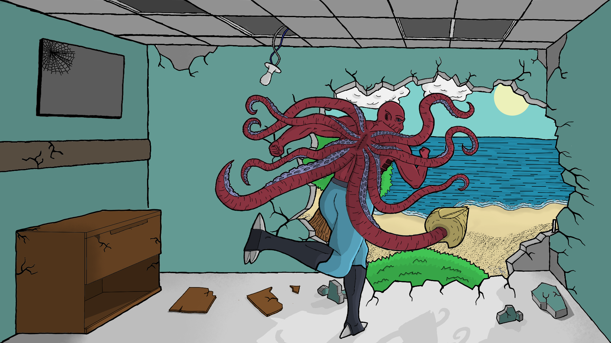

🧾 Proyectos 🧾
Proyecto de sistema transaccional
Descripción del proyecto
Este fue el primer proyecto del curso de programacion, consiste en un sistema de compras en linea para una tienda de hardware. Contiene funcionalidades dependiendo del tipo de usuario, como el administrador, que puede gestionar productos y usuarios, y el cliente, que puede realizar compras.
Proyecto de sistema transaccional con spring boot
Descripción del proyecto
Este proyecto es el segundo proyecto del curso de programacion, es una continuacion del primer proyecto pero con la finalidad de ser publicado como una pagina web. Utiliza Spring Boot para el backend y html, css y js para el frontend, permitiendo una experiencia de usuario más fluida y moderna. Cuenta con funcionalidades similares al primer proyecto, como la gestión de productos y usuarios, pero con una interfaz más atractiva y conexion a base de datos.
Proyecto de ilustracion Final
Descripción del proyecto
Este fue el proyecto final del curso de expresion artistica. Consiste en una ilustacion compuesta por un fondo y un personaje humanoide con elementos mecanicos y animales. Este proyecto se realizo a lo largo del curso con revisiones periodicas de la profesora, para asegurar que se cumplian los requisitos del proyecto.
Proyectos cortos de Manipulacion de la imagen


Descripción del proyecto
Estos son varios de los proyectos cortos de manipulación de imágenes que se realizaron durante el curso. Cada uno explora diferentes estilos artísticos.